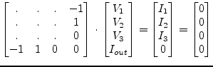
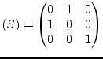

|
(9.21) |
An ideal bias t is a combination of a DC block and a DC feed (fig. 9.1). During DC simulation the MNA matrix of an ideal bias t writes as follows:
|
(9.21) |
The MNA entries of the bias t during AC analysis write as follows.
|  | (9.22) |
The scattering parameters writes as follows.
|  | (9.23) |
A bias t is noise free. A model for transient simulation does not exist. It is common practice to model it as an inductor and a capacitance with finite values which are entered by the user.